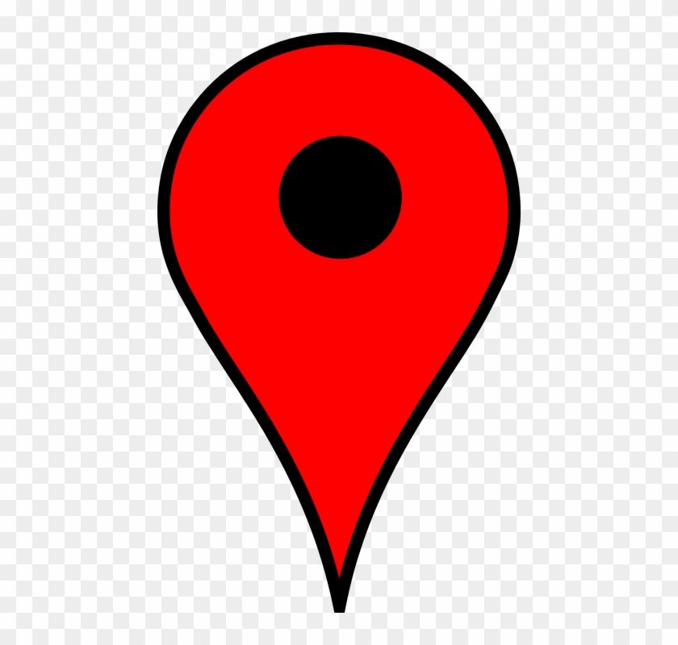

<ion-header>
  <ion-toolbar >
  <ion-row>
    <ion-col text-start padding-top>
      <ion-back-button></ion-back-button>
    </ion-col>
    <ion-col text-end>
      <ion-button (click)="loadMap()" shape="round" fill="outline">
        <ion-icon slot="start" name="locate"></ion-icon>
        Locate Me
      </ion-button>
    </ion-col>
  </ion-row>
</ion-toolbar>
</ion-header>

<ion-content fullscreen>
  <!-- <div class="map-wrapper"> 
     <div id="map_center">
      
    </div> -->
    <div #map id="map"></div>
 <!-- </div> -->
</ion-content>
